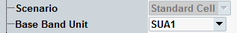

General Settings
The general settings are at the top of the configuration dialog. Configure them according to your test scenario, before configuring any other settings.

Top of dialog
The general settings are described in the following.
The current software version supports only the "Standard Cell" scenario.
Selects the signaling unit to be used. This setting is especially useful for multi-CMW setups, to control which instrument is used.
Remote command: